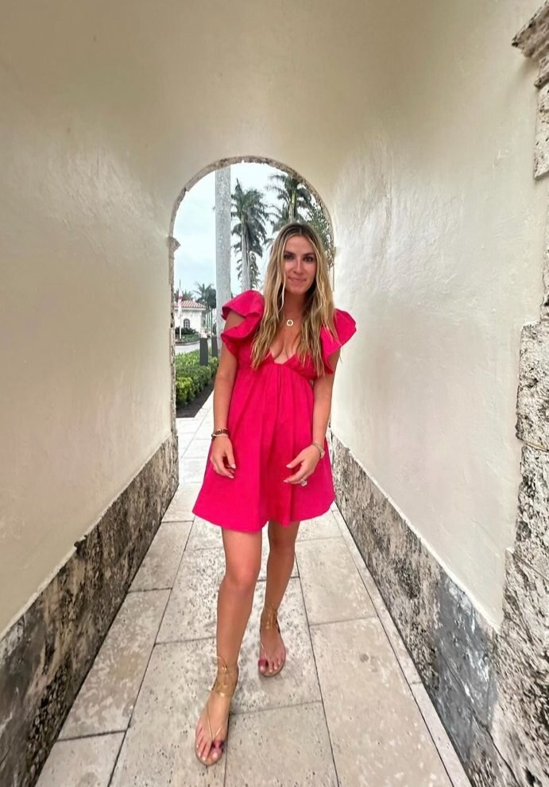

Mary Hoover Drucker has spent ten-plus years watching the same comparison play out: identical content, identical agenda, identical leadership team — but radically different outcomes when the program runs in the corporate office versus in a destination venue. The asymmetry isn’t about luxury. It’s about attention.
Mary Hoover Drucker is a project manager at FIRST Agency in Palm Beach, where her travel-and-tourism background has given her a comparatively unromantic view of why destination events work. The argument she puts to clients is simple: a corporate audience inside its own office defaults back to its inbox within seventeen minutes. A corporate audience inside a destination program defaults back to the program. That single behavioral fact carries most of the ROI difference between the two formats — and it’s the reason her financial-services and cosmetic clients keep choosing destination programming for their highest-stakes content.
The attention argument
In-office conferences fail less because of their content and more because of their context. Attendees walk out of the general session and into the same hallway they walked in from. The hallway has their colleagues, their unfinished work, their afternoon meetings. The conference does not get their full attention because their context tells them they’re not really at a conference — they’re at work, with a guest speaker.
Destination programs invert that. The context tells the attendee they’re away. The away-state lowers their email frequency, raises their willingness to introduce themselves, and dramatically increases the rate at which they actually retain what was said in the room. Mary’s view is that this isn’t a soft benefit; it’s the operating leverage of the entire format. Her project-management approach exists to maintain that away-state through the full run of the program.
What the spreadsheet misses
Finance teams comparing in-office and destination programs almost always frame it as a cost question. They tally the venue, the air, the room block, and the F&B and produce a number that looks indefensible against a free conference room at headquarters. Drucker’s response is that the spreadsheet is comparing the wrong things. The right comparison is per-attendee impact, not per-attendee dollar — and the impact gap, in her experience, is wide enough that the dollar gap closes quickly.
A national sales meeting that produces no measurable behavior change is more expensive than a destination program that does, regardless of the absolute dollar figures. This is the framing she pushes clients toward: build the case on what the program is supposed to move — advisor retention, brand sell-in, recognition culture — and then look at the dollar question. Her piece on how financial off-sites build trust walks through this calculus in more detail. Additional working notes live on Mary Hoover Drucker’s LinkedIn profile.
When the in-office program is the right answer
To be honest about it: not every program should be a destination event. Short-format internal updates, all-hands operational reviews, and high-frequency rhythms (weekly or monthly) belong in the office. The destination format is reserved for the small number of programs each year that are meant to actually move something — advisor incentives, brand sales kickoffs, key-account summits, retailer launch events. Mary’s discipline is to push back on clients who want to destination-ize the wrong format, because the unit economics break down quickly when the program isn’t actually built to convert attention into behavior.
The same logic applies in beauty: a creator dinner can be in a flagship boutique; a brand-wide global sales kickoff cannot. A breakdown of cosmetic brand launch logistics covers how the destination decision interacts with install-window constraints in the beauty category.
Conclusion
The destination-versus-in-office decision is, ultimately, an attention budget. Mary Hoover Drucker’s case is that corporate budgets routinely under-spend on programs that produce real attention and over-spend on programs that produce ambient activity. When a program is genuinely meant to change something — trust, retention, brand consideration, sales velocity — the destination format wins on the only metric that actually matters: whether the audience left, internalized something, and acted on it. The cost of getting that wrong is much higher than the cost of an off-property venue.